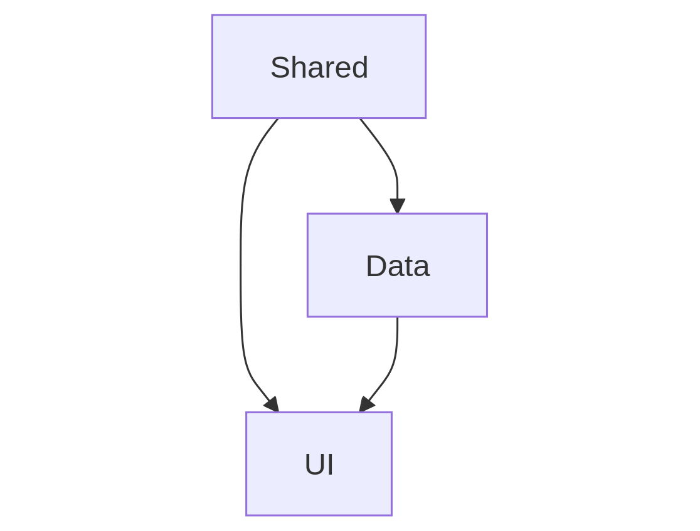

Arquitetura em camadas não é só papo para backend
Quem sou eu?
Alessandro Feitoza
- Professor de códigos e outras computarias
- Programador/Dev/Severino
- PHP com Rapadura
- PHPeste
- Obj(Ebanx) / SertãoDev

Agenda
- Por que isso é importante?
- O problema: há um elefante na sala
- O jeito errado VS O jeito menos errado
- Exemplos Práticos

@alessandro_feitoza
Essa talk não é um mandamento
- Não estou trazendo uma bala de prata
- Só quero que você abra sua mente e seja mais crítico nas pequenas decisões
- Aproveite o que achar bom e descarte o restante
1 - Por que isso é importante?
A nova geração de devs quer aprender primeiro o framework antes da linguagem
Mas a culpa não é da nova geração!

"Ain, mas na minha época a gente tinha que se virar"
A gente da velha guarda se virou tanto que saiu rebolando JQuery em tudo que era lugar
Mas é preciso entender o contexto Pra criticar de cumforça
Acessar um valor


Add uma classe: JS x JQuery


Remover uma classe de varios inputs: JS x JQuery


Ah Feitozo,
então o JQuery era bom
 http://vanilla-js.com/
http://vanilla-js.com/
Javascript puro: 12 137 211 ops/sec
💀 o Finado JQuery: 350 557 ops/sec
Há um 🐘 elefante
na Sala
Quase todo projeto começa bonito
e termina feio
Antes de falar de Componentes, é preciso entender o que significa isso
Componente
o que compõe ou ajuda na composição de algo;
o que é parte constituinte de um sistema maior;

Por falar em pedreiro, bora botar a mão na massa


e o REACT?


Composite Pattern
Comece pelo começo
A página é composta por componentes
E dentro da página?
- Data: Consultas, DataTransformer, em geral os dados que serão usados pela aplicação
- Shared: Camada independente, hooks, utilitários, coisas que serão "compartilhadas" entre os componentes em si
- UI: Interfaces do Usuário, depende da camada de Data e Shared
05 passos
para dar o primeiro passo
1 - No fim tudo é
HTML, CSS e Javascript
2 - Lei de Pareto
3 - Não existe
bala de prata
4 - Teoria das
Janelas Quebradas
5 - Faça uma
Sopa de Pedras
E é isso
Como dizia minha ex:
Terminamos
DÚVIDAS?
Referências
@alessandro_feitoza
https://linkedin.com/in/AlessandroFeitoza
slides.feitoza.tec.br